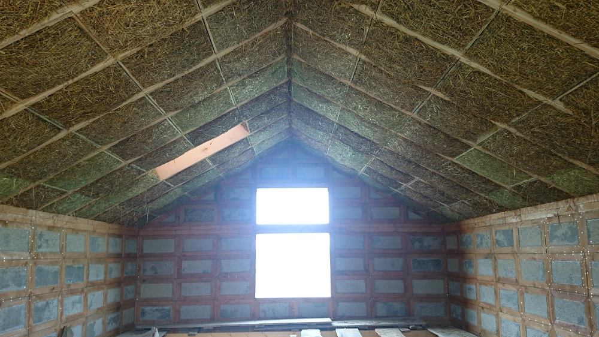
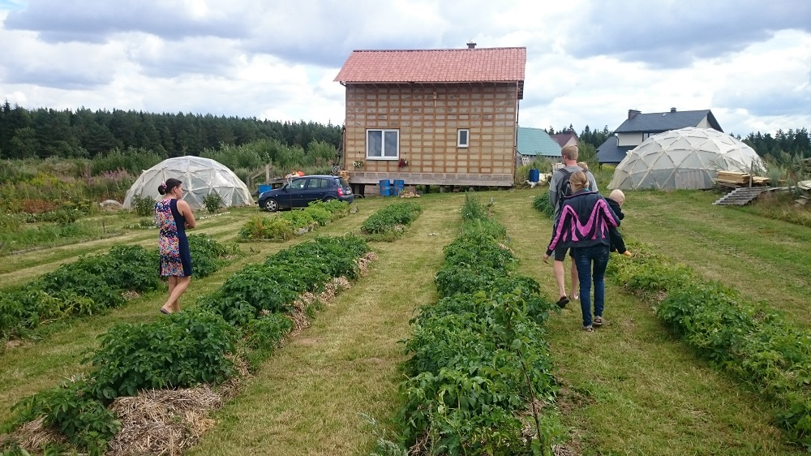

Дневник стройки моего дома – первого экокуба на Земле!
Рассказывает Олег Щукин, директор ЧУП «Протеже БАЙ»
Поскольку я являюсь руководителем проектной организации, то к проектированию своего дома подошел особенно скрупулезно. Идею построить соломенный дом «подкинул» мне товарищ лет 10 назад. Для изучения идеи мне хватило 1 ночи в Интернете. Потом было неспешная подготовка: покупка участка земли, изучение деталей строительства, покупка ленточной пилорамы. Технология планировалась классическая – двухрядный каркас с утеплением тюками. Я побывал на нескольких строящихся домах по этой технологии, где у меня появились нескромные вопросы. В первую очередь – это неплотное заполнение каркаса тюками. В некоторых местах, например под окнами и на стыке стен с перекрытиями, мне удавалось просунуть руку сквозь стену. И это при том, что на некоторых стройках сами хозяева занимались укладкой тюков – уж они-то за качеством должны были смотреть особо пристально!
Когда участок был куплен, оставалось решить одну глобальную проблему – покупка тюков соломы нужного размера и плотности. А это была реальная проблема: везде сейчас делают либо круглые валки, либо прямоугольные тюки очень большого размера – 1,2?2,4?0,6 м. И вот в процессе поиска поставщика меня знакомят с разработчиками системы «Экокуб». У меня были фото первых экспериментальных блоков-экокубиков (это была первая статья про технологию «Экокуб» в журнале «Строим дом» № 9/2012). Разработчики в своей системе предусмотрели не только конструкцию стен, но и пола, перекрытий, крыши, дополнительно они предложили экономичную схему устройства простого и надежного фундамента. После общения с «первоисточниками» я дал согласие на строительство пилотного дома по системе «Экокуб». Мне все было понятно, и я сразу увидел отсутствие «тонких» мест, которые имеются в классическом двухстоечном каркасе: нет мостиков холода, нет проседания соломы под своим весом, нет возможностей сквозного продувания, нет проблем с оштукатуриванием дома глиной.
Руки и голова у меня на месте – я хотел строить дом сам. Теоретически это можно было сделать, но поскольку дом был пилотным, то на нем «обкатывались» многие технические решения и ноу-хау, которые до этого существовали только на бумаге. Поэтому пришлось согласиться на строительство сторонней бригадой под контролем разработчиков системы «Экокуб». Хотя этот момент оказался очень выигрышным для меня – разработчики контролировали строителей не хуже меня, а, скорее, даже намного тщательнее. Ведь этот пилотный домик становился их «лицом» на ближайшие годы – ошибок допустить никак нельзя. Единственное, что мне было разрешено сделать, – это фундамент. После анализа основных вариантов фундамента мы остановились на самом выгодном – сваи ТИСЭ + деревянный ростверк – по авторской конструкции разработчиков системы, которая была максимально адаптирована для моего случая. Сразу скажу, что к концу заливки свай фундамента я сильно пожалел, что взялся за это сам. Как показала практика, эту единственную «мокрую» технологию при возведении дома по системе «Экокуб» выгоднее, проще и уж точно легче доверить специализирующемуся на этом подрядчику, а с учетом затрат топлива и своего личного времени и времени помощников, возможно, и дешевле.
Дом ставился на склоне, поэтому высота столбиков была от 50 см до 1,1 м. В качестве опалубки применялся рубероид. Проблема в том, что после заливки столбика бетон дает усадку. И для разных столбиков усадка разная: более высокие и оседают сильнее. Больше всего сил и времени было потрачено именно на выведение уровня всех столбиков на одинаковую высоту. Только после окончания этого этапа пришло понимание решения этой проблемы. Надо в бетон вставлять пруток тонкой арматуры с выпуском вверх около 10 см. Потом, после схватывания бетона, лазерным нивелиром выставить уровень по высоте самого высокого столбика – он будет эталоном. Все остальные столбики нужно будет доливать до высоты эталона. Для этого на каждом столбике маркером обозначить уровень доливки на торчащем прутке арматуры. И по этому уровню обрезать все прутки болгаркой. Далее остается подобрать раствор, которым будет делаться доливка. Просто бетоном это делать нельзя – он крошится при малых толщинах. Клеевой состав для укладки плитки тоже не годится – он не рассчитан на большие нагрузки. Нагрузки нужно обязательно учитывать, иначе верхушки фундаментных столбиков потом могут растрескаться и осыпаться. Я использовал быстротвердеющую смесь для фиксации анкеров – так называемый химический анкер.
Отверстия под столбики были сделаны за 30 минут с помощью бензобура. А расширения внизу столбиков – с помощью плоскореза Фокина. Это проще и быстрее, чем делать классическим буром ТИСЭ, хоть он у меня и есть.
Конструкция ростверка нестандартная для ТИСЭ – это деревянный брус в 2 ряда. Два ряда нужны для того, чтобы воспринять нагрузку от стены. Ширина стены 500 мм, нагрузка передается через каркас, расположенный на наружной и внутренней поверхностях стены. Брус лежит на металлическом швеллере, который опирается на сваи ТИСЭ. Швеллер нужен для того, чтобы стены шириной 500 мм могли опереться на столбики фундамента диаметром 250 мм, т.е. он расширяет фундамент.
На материалы фундамента было потрачено $2000. Работа и доставка – своя. Погреб строился отдельно и обошелся примерно в $700 (без утепления).
Далее за дело взялись специально обученные строители. Сначала из блоков «Экокуб» сделали пол. Поскольку это было начало ноября, то сразу же затянули дожди. Никакое укрытие не спасало пол от воды, дырочка находилась всегда. Поэтому пол пришлось разобрать, блоки хорошо укрыть на просушку. Далее продолжили возводить стены. Работа велась в сухую погоду, а на ночь стены сверху накрывались. Так проработали до новогодних праздников. Потом начались снегопады и ударил мороз – стройка остановилась, когда морозы перевалили за –15°С. За дождливую осень и начало зимы были построены стены первого этажа, работали 2 человека. Тяжелая техника на площадке использовалась только при монтаже погреба. Привозили блоки на грузовичке, складировали их в теплицу под крышу. На стены блоки, вес которых 15 кг, подавались руками, при повышении высоты стен стали использовать веревку и простой полиспаст, что позволило поднимать экокубы по несколько штук. Блоки на стенах соединяются друг с другом по системе шип-паз с помощью шурупов, поэтому для сборки дома нужен только шуруповерт. Даже леса не понадобились – работа велась с лестницы и со специальной люльки, передвигаемой по стене. Первый этаж увенчался балками перекрытия, закрепленными на стенах не как обычные двухопорные, а как «защемленные» балки, что повышает их несущую способность. На балки настелили доски, и получился надежный временный пол. С него продолжили складывать стены мансарды, армопояс и двухскатную крышу. Очень многое в системе «Экокуб» возводилось не так, «как принято» в строительном деле, а совсем по-другому. Экокубики-блоки ставятся друг над другом без перевязки, фиксируются силовыми фанерными полосами, а скрепляются множеством шурупов. Конструкция армопояса представляет собой деревянную лежащую ферму, воспринимающую распирающие нагрузки от скатной кровли. Кстати, конструкция кровли еще более уникальна – она бесстропильная, вернее сказать, роль стропила в ней выполняет вертикально поставленное фанерное ребро! Все это больше напоминает конструкции из авиастроения – сказалось образование и опыт разработчиков! Впрочем, об этом лучше могли бы рассказать сами разработчики, что они и делали: только во время строительства дома состоялось не менее десятка экскурсий для желающих лично увидеть строительство первого дома по уникальной отечественной технологии. Крыша возводилась безопасно и удобно – изнутри, и при этом из нее не торчат никакие стропила – мостики холода в обычных крышах. Ставился временный конек и направляющее технологическое стропило, на котором выставлялись кровельные блоки, соединяющиеся между собой и с ребрами. Потом технологические направляющие сдвигаются на шаг ряда блоков и монтируется следующая «долька» готового «пирога» крыши – с силовой конструкцией, утеплением и, в моем случае, верхней подкровельной мембраной. В итоге получается несущая кровля с утеплителем толщиной 70 см! Изначально в проекте была толщина 35 см. Но в процессе строительства разработчики системы и мой анализ зарубежного опыта убедили меня в обоснованности увеличения утепления крыши в 2 раза, что соответствует стандартам энергопассивных строений. Такая толщина утеплителя позволяет кардинально исключить теплопотери через кровлю, ведь теплый воздух в доме поднимается вверх. С такой толщиной кровли в Европе строятся энергопассивные дома, при более мягком и теплом, чем у нас, климате вообще не требующие систем отопления.

После накрытия дома кровлей наконец стало возможно спокойно вздохнуть – дожди уже были не страшны. После этого возвели пол 1-го этажа. При этом оказалось, что практически вся солома в замоченных половых блоках с осени успешно высохла, и ее не пришлось менять. Дальше сделали межэтажное перекрытие – деревянные балки с заполнением соломой (здесь – в качестве звукоизоляции).
Итак, тепловой контур дома замкнулся. Получились следующие показатели:
- пол – 35 см утепления, R (сопротивление теплопередаче) = 6,4;
- стены – 48 см утепления, R = 8,7;
- кровля – 70 см утепления, R = 12,8.
Напомню, что нормативом на сегодняшний день является R = 6 (для пола и кровли) и R = 3,2 для стен. Так что запас сделан основательный.
О черновой отделке. Собранные стены экокуба имеют не только силовой несущий каркас, экологичное суперутепление из утрамбованной соломы, но и предварительные поверхности. На первом этаже это цементно-песчаная штукатурка. На мансарде – фиброплита Green board (дом не зря называется пилотным – на нем было опробовано 3 поколения стеновых блоков). Деревянные элементы блоков-экокубиков предварительно пропитаны масляной пропиткой и не боятся атмосферных воздействий. Потолок подшили фанерой 10 мм. На пол постелили фанеру 15 мм. Чуть позже потолок и пол я покрасил. На первое время фанера сойдет как чистовая поверхность, а в будущем на пол добавится второй слой фанеры и покрытие типа пробки или натурального линолеума. На стены я сделал временную чистовую отделку – повесил с помощью степлера виниловые стеновые покрытия Vincover. Фишка этих покрытий в том, что это единственные виниловые покрытия в мире (насколько я знаю), имеющие хорошие свойства по паропроницаемости, т.е. они «дышат».
На всю чистовую отделку было потрачено меньше 1-го рабочего дня! И в доме уже можно жить и заниматься его дальнейшим благоустройством: перегородки, двери, коммуникации, печь, лестница.
В процессе строительства я столкнулся с интересным свойством соломы. Пока мы дожидались поставки кровельного материала, дом был накрыт временным материалом – ПВХ-пленкой. И вот во время особо сильного дождя вода дырочку нашла, и кровля протекла – на потолке появилось мокрое пятно. Этот факт очень сильно нас расстроил: это значило, что 70 см утеплителя промокли насквозь. И когда через 2 недели стелили постоянную кровлю, то я разобрал «пирог» в этом месте, чтобы заменить мокрую солому. И каково же было мое удивление, когда я не обнаружил там мокрой соломы – она просто высохла за это время! Теперь я точно знаю: солома не боится разовых намоканий, она сохнет. А самое главное свойство соломенных стен – они «дышат»! У меня в доме нет системы вентиляции, а дышится всегда легко. И даже в туалете и на кухне нет запаха. Окна с сентября по апрель ни разу не открывались.
В оснащении дома были опробованы разные интересные решения. На одном окне испытали безрамный стеклопакет. В проем вставляется просто стеклопакет на деревянные подставки, чтобы по периметру осталась щель около 15 мм. Эта щель запенивается и закрывается декоративной полосой (как у обычных окон из ПВХ). В итоге имеем 3 выгоды:
- окно получается дешевле в 4 раза;
- окно получается теплее на 25%: рама холоднее стеклопакета (R стеклопакета 1,25, а окна – 1,0);
- окно получается светлее на 28% – больше площадь светового потока за счет отсутствия рамы при той же площади проема.
Эксперимент оказался успешным. Теперь я всем рекомендую делать максимальную площадь остекления безрамными стеклопакетами, а для проветривания использовать несколько маленьких форточек, расположенных в оптимальных местах.
Под домом заложена геотермальная система вентиляции «канадский колодец». Воздух в дом подается по трубе, которая закопана в землю на глубину 2–3 м. Температура земли на такой глубине практически постоянна и составляет 7–10°С. В результате зимой воздух подается в дом предварительно подогретым, а летом, наоборот, он охлаждается, и не нужен кондиционер.
На окнах планируются сдвижные ставни, которые будут открываться и закрываться автоматически, по датчикам температуры и солнца. Они помогут избежать перегрева дома летом в жару и пропустят солнце в дом в прохладное время.
На данный момент в моем коттеджном массиве нет электричества. Для освещения и зарядки ноутбука и телефонов я поставил солнечную панель и аккумулятор. Летом нам вполне хватало одной панели в 90 Вт. Осенью выручает генератор, который попутно заряжает гелевый аккумулятор во время работы с электроинструментом. Для отопления я построил печь с реактивной тягой – это кирпичная пиролизная печь. На отопление уходит меньше 10 кг дров в сутки. Для парной я тоже планирую сделать «ракетную» печь с нагревом камней «по-черному».
Да, в этом доме будет парная. По-сути, это получился соломенный гостевой дом с баней. Правда, гостям в нем места не найдется: дети уже «застолбили» себе комнаты для постоянного проживания, а меня с женой отправляют строить себе отдельный дом.
Класс дома по энергоэффективности А+. Это высший класс по белорусским нормам: потребление дома на отопление меньше 55 кВт·ч на 1 м? в год (ТКП 45-2.04-196-2010). Это значит, что на его отопление уйдет в 2–3 раза меньше энергии, чем на обычный дом класса С. При сегодняшних ценах на газ в любом случае получится смешная цифра. Но цены на газ правительство настойчиво предлагает сделать экономически обоснованными, и это в 4,5 раза больше, чем сейчас! А если сравнить цены на газ с украинскими или польскими, то разница составляет 10–15 раз! И тогда класс дома по энергоэффективности уже будет иметь первоочередное значение.
В будущем дом планирую отапливать тепловым насосом воздушного типа – когда появится электричество. Подключаться к газу или нет – этот вопрос надо будет решать с учетом конкретных сумм за подключение, уж очень большая разбежка может получиться. То есть газ не является панацеей для такого дома, можно выбирать и другие интересные варианты.
Сегодня строительство аналогичного дома своими руками обойдется примерно в следующие суммы (в тыс. $):
- фундамент – 2;
- погреб – 0,7;
- пол – 4;
- стены – 14;
- перекрытие – 3,5;
- покрытие (крыша) – 12;
- кровля – 1,5;
- окна – 1,2;
- двери – 0,7;
- перегородки – 0,4;
- керамический дымоход – 0,9;
- печь – 0,4;
- «канадский колодец» – 0,4;
- лестница – 0,3.
Для сборки дома нужен только шуруповерт, все остальное идет в комплекте.
Но не так важна общая сумма, потраченная на дом. Намного важнее сумма, которую я буду тратить на дальнейшее отопление. По моим оценкам получается меньше $20 в год при отоплении газом (по сегодняшним ценам)!
Впереди еще водосточка, подшивы, вентфасады, зашивка цоколя, чистовая отделка, постоянные вода и канализация. Очень важный момент – конструкция дома позволила нам вселиться на следующий день после ухода строителей. И дальше остальными работами можно не спеша заниматься, уже проживая в своем доме. Этого не могут себе позволить владельцы домов из кирпича или блоков.
Дом спроектирован по законам Васту – ведический закон об архитектуре.



{kind=link}
{kind=link}